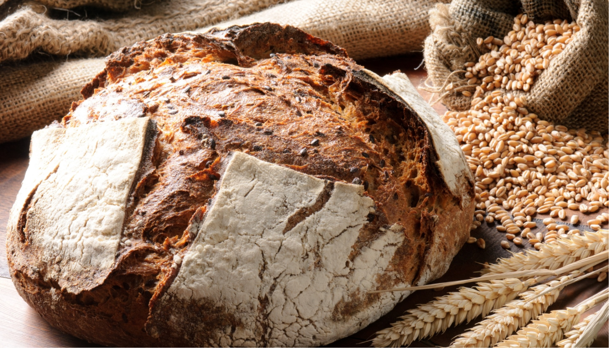

Лайфхаки
Хранение хлеба
Правильное хранение продуктов является ключевым аспектом
осознанного потребления. Он помогает минимизировать
продуктовые отходы и сокращает излишнюю потребность
в закупке новых товаров. Сохранение продуктов
в соответствии с рекомендациями по температуре,
влажности и сроку годности позволяет сохранить
их свежесть и качество, избегая преждевременного
распада или порчи. Это также способствует эффективному
использованию ресурсов и экономии денег, ведь
мы используем то, что уже имеем, прежде чем
приобретать новое.
Хранение хлеба важно для сохранения его свежести
и вкуса.
Хлеб — один из основных продуктов на столе
каждого россиянина, но, к сожалению мало кто знает правила
хранения данного продукта. Однако, существует ряд лайфхаков
и советов, которые помогут сохранить свежесть и вкус
хлеба на дольший срок.

 Используйте хлебницу
Используйте хлебницу
Хлебница — это специальный контейнер для хранения хлеба,
который позволяет сохранить свежесть продукта. Мы предлагаем
использовать хлебницу из натурального дерева,
так как она лучше всего справляется с поддержанием
нужной температуры и влажности.
 Замораживайте хлеб
Замораживайте хлеб
Если у вас остался свежий хлеб, который вы не планируете
съесть в ближайшее время, его можно заморозить.
Для этого следует разрезать хлеб на куски и уложить
в пакет для замораживания. Перед употреблением хлеб
следует разморозить и подогреть в духовке.
 По возможности не храните хлеб в холодильнике
По возможности не храните хлеб в холодильнике
Хранение хлеба в холодильнике может привести к потере
вкуса, однако, если вы живете в жарком климате
или хотите сохранить хлеб на дольший срок, то можно
использовать этот метод. Хлеб следует уложить в пакет
для хранения, который не допускает воздух.
 Хранените хлеб в бумажном мешке
Хранените хлеб в бумажном мешке
Бумажный мешок — это еще один способ хранения хлеба,
который позволяет сохранить вкус и свежесть продукта.
Мешок следует закрыть и уложить в прохладное место.